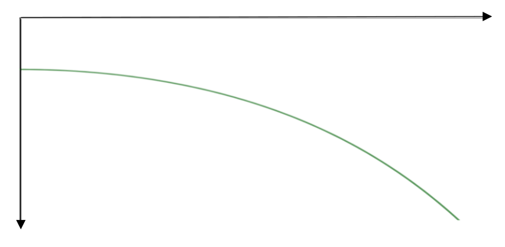
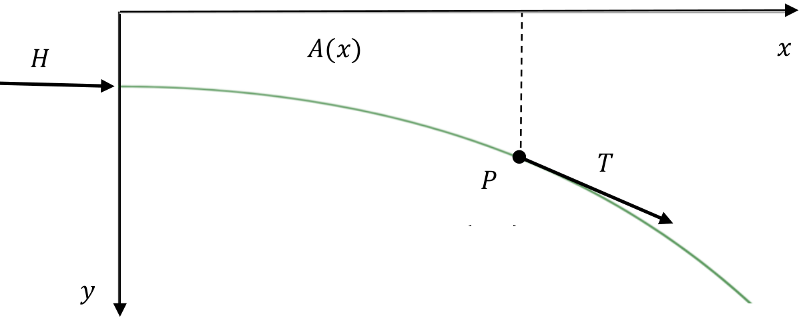
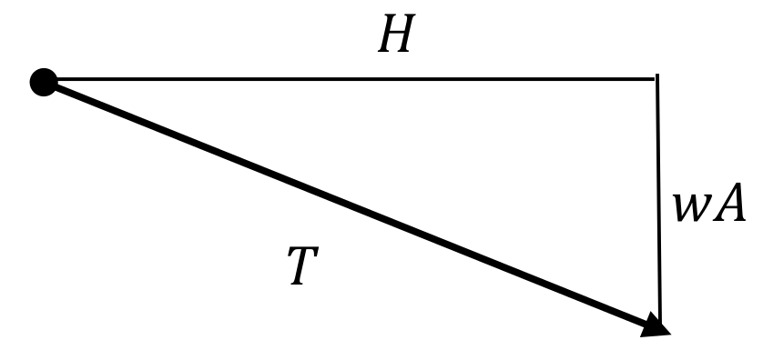

In [cross-reference to target(s) "SUBSECTIONChains" missing or not unique] we examined the shape of a hanging chain and in [cross-reference to target(s) "SECTIONhyperb-trig-hang" missing or not unique] we showed that its shape is a catenary with equation
where \(a\) is a constant determined by the weight density of the chain and horizontal tension applied. In those sections, we mentioned that masons had long utilized the shape of an inverted catenary in their design of arches and domes mostly from centuries of experience and trial and error. Utilizing calculus in our analysis of the problem, we finally determined why the most stable freestanding arch utilizes this shape. This shape is the one which directs the weight of the chain tangentially toward the base of the arch. It turns out that the same sort of analysis can be used to determine the “best” shape for the arch on a stone bridge.
To make the most stable arch for such a bridge, we wish to direct the weight of the bridge tangentially toward the base as well. Our mathematical analysis is below. Consider one half of a stone arch bridge drawn below.

We will draw the positive \(y\)-axis downward and will focus on the forces at a generic point \(P\) with coordinates \((x,y)\text{.}\) The problem is to find the curve \(y=y(x)\) so that the vertical component of the tangential force \(T\) at \(P\) is equal to the weight of the bridge from \(0\) to \(x\text{.}\) If we do this, then that means that the weight of the bridge will be directed toward the base of the bridge. With this in mind, let \(A(x)\) denote the area of the side section of the bridge from \(0\) to \(x\text{.}\) We will also let \(H\) denote the (constant) magnitude of the horizontal force along the length of the bridge and \(w\) be the weight density of the stone (per cross sectional area).

With all of this set up, what we really want is the horizontal component of the force \(T\) to be \(H\) and the vertical component to be the weight of the bridge from \(0\) to \(x\text{,}\) namely, \(wA\text{.}\) This leads to the following picture.

This leads to the slope of the tangent line at \(P\) equaling \(\frac{wA}{H}\text{,}\) so we get the differential equation
The problem here is that we don’t know what \(A\) is. However, a moment’s thought tells us that we know what \(dA\) is. If we increase \(x\) to \(x+\dx{x}\text{,}\) then we can see that \(\dx{A}=y\dx{x}\)
Thus, if we differentiate the above equation, we get that the arch should satisfy the differential equation
\begin{equation*}
\dfdxn{y}{x}{2}=\frac{w}{H}\dfdx{A}{x}=\frac{w}{H}\ y
\end{equation*}
satisfies the above differential equation for any constants \(A,\ B\text{.}\)
(b)
Show that if \(y\left(0\right)=\sqrt{\frac{H}{w}}\) and \({\left.\dfdx{y}{x}\right|}_{x=0}=0\text{,}\) then \(A=B=\frac{1}{2}\sqrt{\frac{H}{w}}\text{.}\) Compare this to the equation of the catenary in Problem 8.4.0.1.
While it is interesting that the above example illustrates the importance of catenaries in engineering, the important thing for us is that \(\dx{A}=y\dx{x}\text{.}\) Thus
which relates integrals to areas. This relationship was known to both Newton and Leibniz, as well as some of their predecessors. It is of such importance that it is known as the Fundamental Theorem of Calculus. We will explore this idea more carefully in the next section and develop a more precise notation to deal with this application of integrals